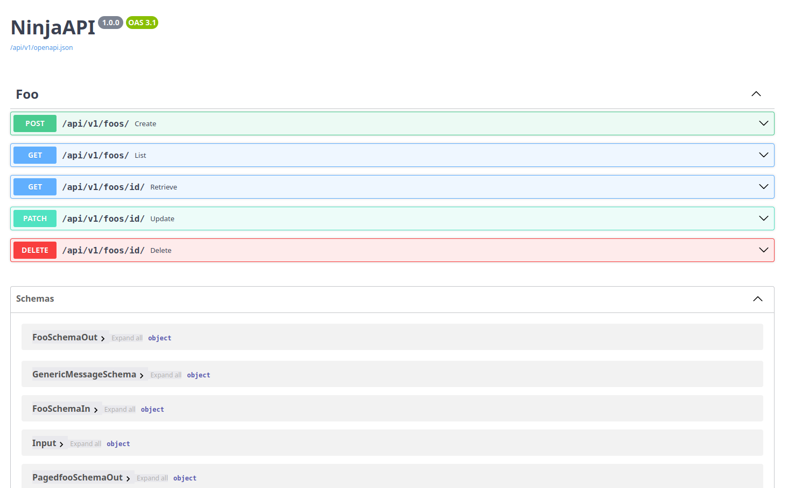
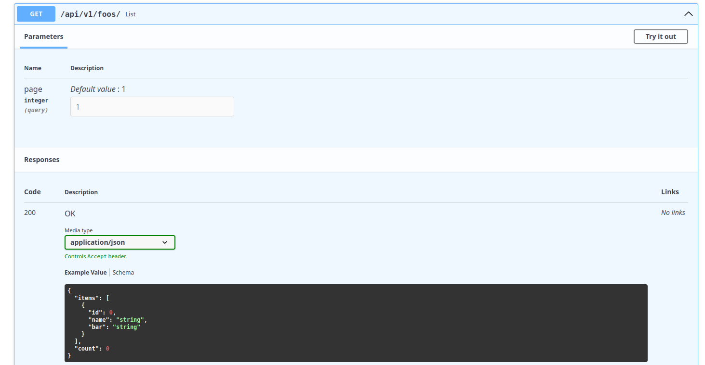
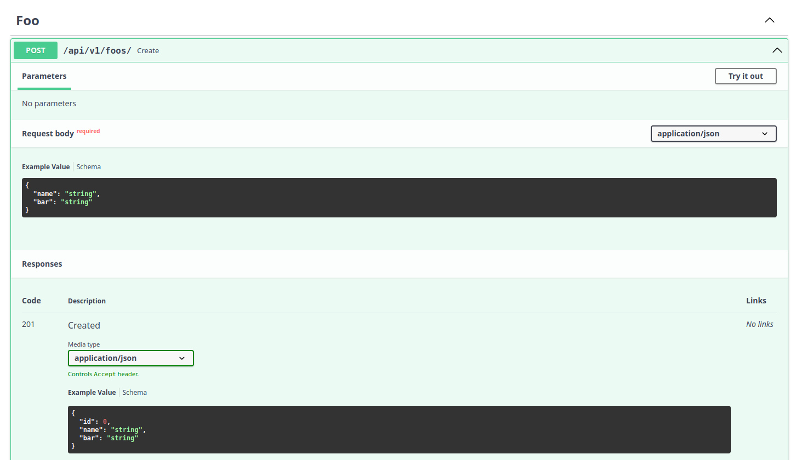
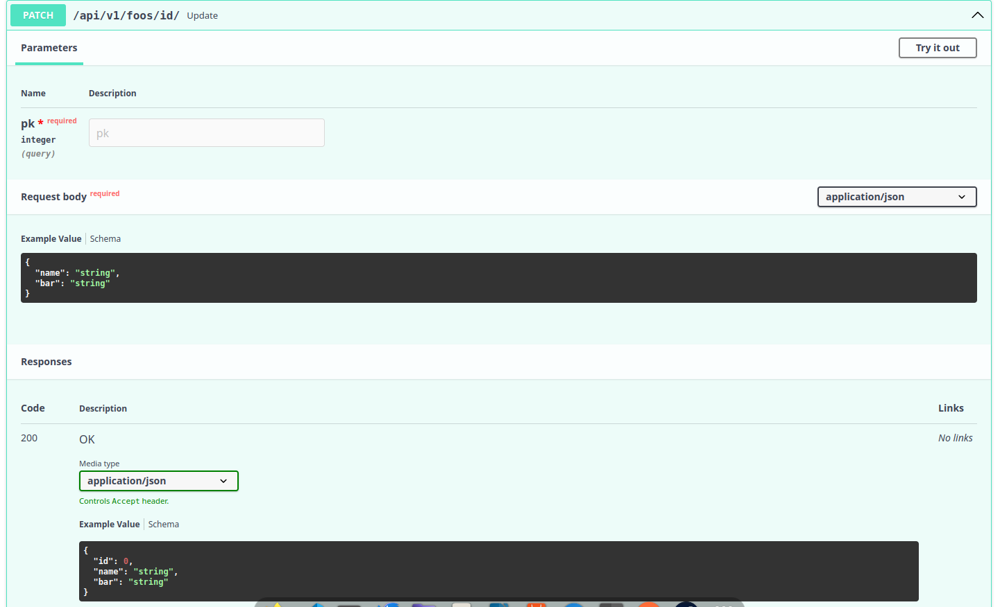
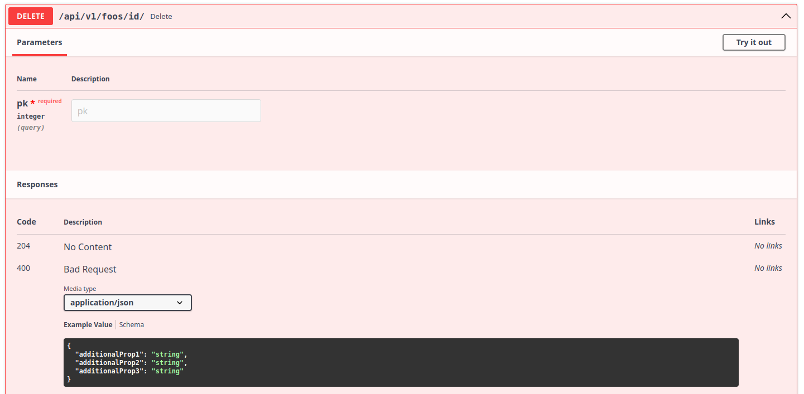

Django Ninja Aio CRUD - Rest Framework¶
Django Ninja Aio CRUD is a web framework based on Django Ninja framework(developed by Vitaliy Kucheryaviy). It comes out from the purpose to make fast coding async CRUD operations. It comes out with built-in views, model and some utilities like JWT authentication class.
Installation¶
Quick Usage Example¶
Start a new Django project and define your models using ModelSerializer class
# models.py
from django.db import models
from ninja_aio.models import ModelSerializer
class Foo(ModelSerializer):
name = models.CharField(max_length=30)
bar = models.CharField(max_length=30)
class ReadSerializer:
fields = ["id", "name", "bar"]
class CreateSerializer:
fields = ["name", "bar"]
class UpdateSerializer:
fields = ["name", "bar"]
Define your CRUD views using APIViewSet class and your API with NinjaAIO class
# views.py
from ninja_aio import NinjaAIO
from ninja_aio.views import APIViewSet
from .models import Foo
api = NinjaAIO()
class FooAPI(APIViewSet):
model = Foo
api = api
FooAPI().add_views_to_route()
Add API paths to your urls
# urls.py
from django.contrib import admin
from django.urls import path
from api.views import api
urlpatterns = [
path('admin/', admin.site.urls),
path("api/", api.urls)
]
Now run your local server
Go to http://localhost:8000/api/docs and see the result
Swaggers Overview¶

List Swagger¶

Create Swagger¶

Retrieve Swagger¶

Update Swagger¶

Delete Swagger¶
